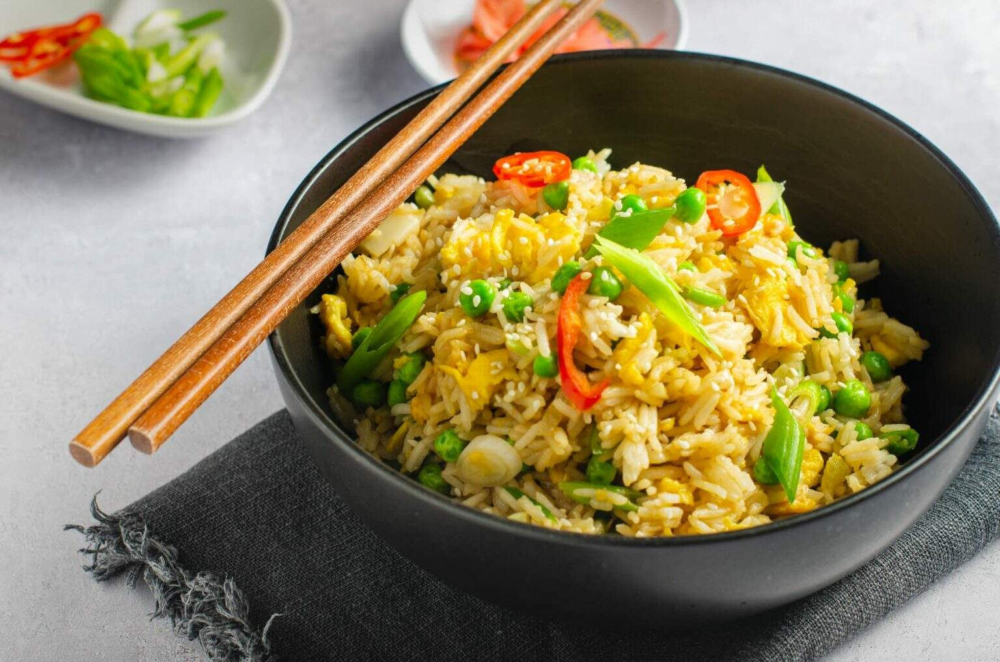

Egg Fried Rice (back)

Here's a quick egg fried rice recipe:
Egg fried rice is a classic savory dish in Chinese cuisine.It's a stir-fry that features fluffy cooked rice, scrambled eggs, and usually some vegetables and aromatics.
- Quick and easy to make: You can whip it up in under 30 minutes with minimal prep.
- Versatile: Feel free to add different vegetables, protein sources, or adjust the seasonings to your taste.
- Great for using leftovers: It's a perfect way to use up leftover cooked rice.
Ingredients:
- 1.5 cups cooked white rice (preferably cold and dried out from the refrigerator overnight)
- 3 eggs
- 3 cloves garlic, chopped
- 1 tablespoon ginger, chopped
- 4 scallions, thinly sliced (separate the whites and greens)
- 1 cup frozen mixed vegetables (thawed, or use other chopped veggies of your choice)
- ¼ teaspoon white pepper
- ½ tablespoon sugar
- 1 teaspoon salt
- ¼ teaspoon MSG (optional)
- 1 tablespoon soy sauce
- 2 tablespoons neutral oil (like avocado oil)
- 1 teaspoon toasted sesame oil
Method:
- Heat the neutral oil in a large skillet or wok over medium-high heat.
- Add the chopped garlic and ginger, and cook for about 30 seconds until fragrant.
- Scramble the eggs in a separate bowl. Push the garlic and ginger to the side of the pan, then pour in the beaten eggs. Let the eggs cook slightly, then scramble them until mostly cooked through, but still a bit runny. Transfer the cooked eggs to a plate.
- Add the white parts of the scallions and the frozen vegetables (or other chopped veggies) to the pan. Cook for 2-3 minutes, or until heated through.
- Add the cooked rice to the pan and spread it out evenly. Increase the heat to high and stir-fry the rice for a few minutes, breaking up any clumps. You want the rice to get a little crispy in some parts.
- Push the rice to the sides of the pan and add the toasted sesame oil to the center. Swirl the oil to coat the bottom of the pan.
- Add the soy sauce, white pepper, sugar, salt, and MSG (if using) to the pan. Stir everything together to combine.
- Add the cooked eggs back to the pan and mix them in with the rice and vegetables.
- Garnish with the green parts of the scallions and serve immediately.